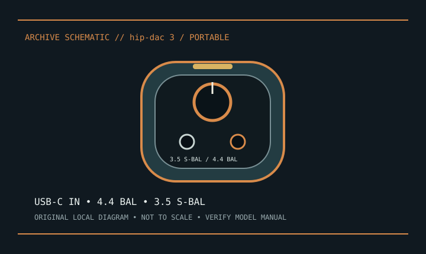

[ INDIVIDUAL COMPONENT // SOUND HARDWARE ]
iFi hip-dac 3
Third-generation hip-dac portable USB DAC and headphone amplifier. Not the original hip-dac or hip-dac 2.

Model-specific specifications
| Product | iFi hip-dac 3; verify third-generation markings. |
|---|---|
| Input | USB-C digital audio input; follow iFi’s instructions for USB charging and data connection. |
| Outputs | 4.4 mm balanced and 3.5 mm S-Balanced headphone outputs; balanced wiring is not interchangeable with ordinary single-ended adapters. |
| Conversion | iFi lists PCM up to 384 kHz and native DSD up to DSD256; host driver/software determines available formats. |
| Amplification | Built-in headphone amp, PowerMatch gain and XBass analog processing. Headphone jacks are not line outputs. |
| Power/software | Internal rechargeable battery; runtime varies. Host driver requirements depend on OS; use hip-dac 3-specific support. |
Compatibility & preservation
Avoid long storage fully discharged or hot. Label balanced cables and preserve driver notes; check USB format negotiation after host updates.
- Photograph the model/revision label, connector panel, and installed/bundled accessories before service.
- Retain manufacturer manuals, original driver/firmware packages, and known-working configuration notes with the hardware.
- Use the specified signal level, connector wiring, and power requirements; connector fit alone does not prove compatibility.
Manufacturer sources
- iFi audio — hip-dac 3Manufacturer generation-specific I/O and audio-format specifications.
- iFi audio — supportManufacturer manual/driver portal; select hip-dac 3.